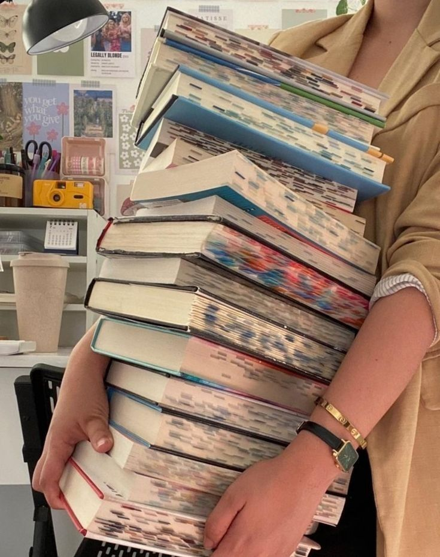
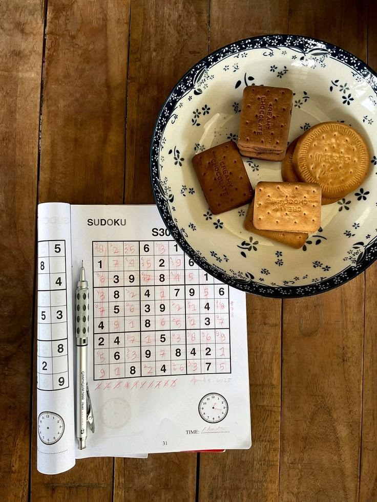
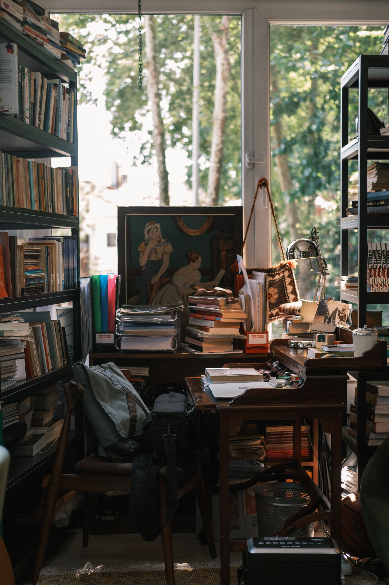

Hobby's en interesses
In mijn vrije tijd houd ik mij graag bezig met creatieve en technische activiteiten. Ik vind het leuk om nieuwe dingen te leren en mijn eigen ideeën uit te werken.
Mijn hobby's in beeld
Grafisch ontwerp en tekenen
Een van mijn interesses is grafisch ontwerp. Ik vind het leuk om met kleuren, vormen en verschillende stijlen te werken. Een goed ontwerp moet er niet alleen mooi uitzien, maar ook duidelijk en gemakkelijk te begrijpen zijn.
Ook tekenen vind ik een leuke activiteit. Wanneer ik teken, kan ik mijn ideeën op een creatieve manier uitdrukken. Ik wil graag nieuwe technieken ontdekken en mijn eigen stijl verder ontwikkelen.

Programmeren en webdesign
Ik studeer Graduaat Programmeren aan Thomas More in Geel. Tijdens mijn opleiding leer ik hoe ik websites en applicaties kan maken. Ik vind het interessant dat ik met code iets kan bouwen dat mensen kunnen gebruiken.
Webdesign spreekt mij aan omdat het techniek en creativiteit combineert. Bij het ontwerpen van een website denk ik na over kleuren, lettertypes, afbeeldingen en de indeling van de pagina.
Ik vind het belangrijk dat een website niet alleen mooi is, maar ook gebruiksvriendelijk. Daarom wil ik leren hoe ik een aantrekkelijk ontwerp kan combineren met duidelijke en goed werkende code.

Lezen en nieuwe ideeën ontdekken
Lezen is ook een activiteit die mij interesseert. Door te lezen kan ik nieuwe ideeën ontdekken en mijn kennis uitbreiden. Ik vind het fijn om rustig met een boek bezig te zijn.
Ik ben nieuwsgierig en leer graag over verschillende onderwerpen. Soms inspireert iets wat ik lees mij om zelf iets te maken of een nieuw idee uit te proberen.

Creatief bezig zijn met klei
Naast tekenen en grafisch ontwerp werk ik ook graag met klei. Ik vind het leuk om zelf kleine voorwerpen en decoraties te maken. Ik kan verschillende vormen uitproberen en mijn eigen ideeën omzetten in iets tastbaars. Het creatieve proces vind ik interessant, omdat ik zelf kan kiezen hoe mijn werk eruit zal zien.
Werken met klei vraagt geduld en aandacht. Soms lukt iets niet meteen zoals ik het wil, maar dan probeer ik het opnieuw. Ik vind het fijn om met mijn handen bezig te zijn en stap voor stap iets te creëren.
Zoete gerechten maken
Ik maak ook graag zoete gerechten. Ik vind het leuk om nieuwe recepten te ontdekken en verschillende ingrediënten te combineren. Tijdens het koken en bakken kan ik creatief zijn en iets nieuws proberen. Het geeft mij voldoening wanneer een gerecht goed lukt en er mooi uitziet.
Ik vind het interessant om nieuwe technieken te leren en mijn vaardigheden te verbeteren. Net zoals bij programmeren is het belangrijk om de stappen goed te volgen en aandacht te besteden aan de details.
Sudoku oplossen en series kijken
In mijn vrije tijd los ik graag sudoku's op. Ik vind het leuk om logisch na te denken en naar de juiste oplossing te zoeken. Soms is een sudoku moeilijk en moet ik verschillende mogelijkheden proberen. Dat maakt het voor mij interessant. Ik vind het fijn wanneer ik uiteindelijk de oplossing vind.
Daarnaast kijk ik graag naar series. Dat is voor mij een manier om te ontspannen na een drukke dag. Ik vind het leuk om een verhaal te volgen en benieuwd te zijn naar wat er in de volgende aflevering gebeurt. Ik probeer een goede balans te vinden tussen studeren, mijn hobby's en tijd om te ontspannen.
Nieuwe vaardigheden ontwikkelen
Ik wil mezelf blijven ontwikkelen en mijn technische en creatieve vaardigheden verbeteren. In de toekomst wil ik projecten maken waarin ik programmeren en grafisch ontwerp combineer.
Dit zijn enkele vaardigheden die ik verder wil ontwikkelen:
- Programmeren en applicaties bouwen.
- Gebruiksvriendelijke websites ontwerpen.
- Experimenteren met kleuren en grafisch ontwerp.
- Problemen oplossen en fouten begrijpen.
- Nieuwe ideeën bedenken en uitwerken.
Door te oefenen en nieuwe ervaringen op te doen, hoop ik mijn eigen stijl te ontwikkelen en in de toekomst mooie en bruikbare projecten te maken.